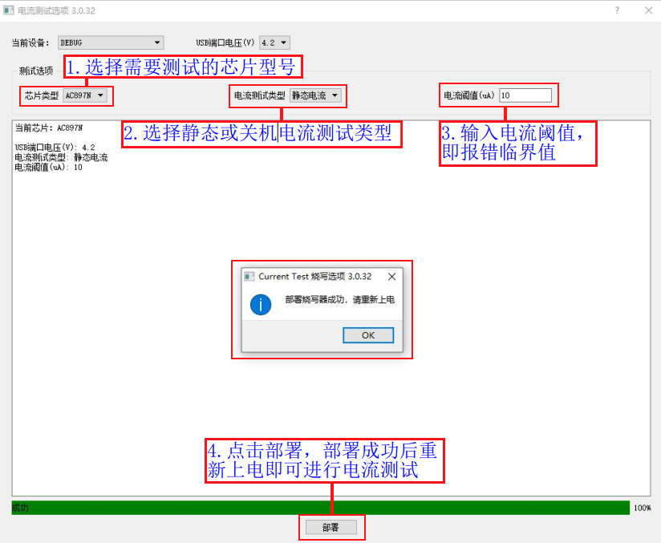
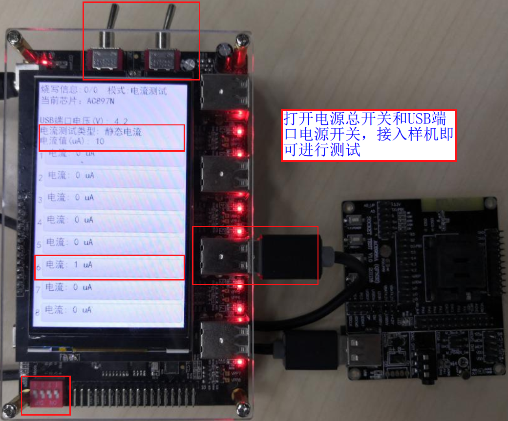

2.13. 电流功耗测试功能
2.13.1. 测试目的和测试类型
测试目的
一拖八烧录器自带电流测试模块，可测试8个USB烧录端口负载消耗的电流。电流功耗测试功能主要用于测试样机各种情形下的电流，用于筛选各情形下电流值不达标的芯片。
测试类型
一拖八烧录器支持烧录芯片程序同时进行芯片功耗测试，可以测试样机上电（样机开始烧录瞬间），开机（样机模拟开机），待机（芯片进入待机模式），关机（芯片进入关机模式），4种情况的样机功耗。
支持单独测电流功能，可测试样机静态电流（供电时），关机电流（进入软关机模式）。
2.13.2. 烧录兼功耗测试使用说明

2.13.3. 单独测电流功能
单独电流测试，静态电流测试支持任意型号芯片，关机电流测试目前一拖八烧录器只支持AC897N、AD697N、AD698N型号芯片，其它型号芯片有测试需求可以咨询杰理技术支持。
请参考《打开PC端控制界面》小节步骤打开PC端控制界面，在PC端控制界面点击“文件”->“部署”->“电流测试”，打开电流测试控制界面后进行如电流测试部署界面所示操作：
【1】选择芯片型号（静态电流测试可不用管芯片型号，默认一个型号即可）；
【2】选择电流测试类型，选择静态或关机电流测试类型；
【3】输入电流阈值（测试临界值，超过设定值报错，芯片判定为功耗过大）；
【4】点击部署，部署电流测试功能到烧录器，部署成功后重新上电即可进行电流测试；

电流测试部署界面
进行电流测试前，确认或设置当前烧录器工作模式为电流测试模式（参考《烧录器工作模式介绍与设置》）
静态电流测试
静态电流测试时，烧录器类似一个电流表，测试的是USB烧录接口给样机供电，样机消耗的电流值。如静态电流测试所示，样机接入烧录器USB烧录通道后，烧录器显示屏实时显示当前样机消耗的电流。当电流值大于设定的阈值超过8S，烧录器会进行报错处理。样机消耗的瞬间电流大于160mA,烧录器会切断USB端口电源并报错，这时候需要重启烧录器才能进行测试。

静态电流测试
关机电流测试
关机电流测试时，测试的是USB烧录接口给样机供电，样机进入软关机模式下消耗的电流值。如关机电流测试所示，样机接入烧录器USB烧录通道后，烧录器显示屏实时显示当前样机消耗的电流。连续测试多次测试值都大于设定阈值，烧录器会进行报错处理。样机消耗的瞬间电流大于160mA,烧录器会切断USB端口电源并报错，这时候需要重启烧录器才能进行测试。

关机电流测试